Diffusion Model
1 Prelimeany
1.1 ELBO
\[ \begin{align} \log_{\theta}P(\mathrm{x}) &= \log \int P_{\theta}(\mathrm{x} | \mathrm{z}) \, d\mathrm{z} \\ &= \log \int P_{\theta}(\mathrm{x, z}) \frac{Q_{\phi}(\mathrm{z} | \mathrm{x})}{Q_{\phi}(\mathrm{z} | \mathrm{x})} \, dx \\ &= \log \mathbb{E}_{\mathrm{z} \sim Q_{\phi}} \left[ \frac{P_{\theta}(\mathrm{x, z})}{Q_{\phi}(\mathrm{z} | \mathrm{x})} \right] \\ &\geq \boxed{\mathbb{E}_{\mathrm{z} \sim Q_{\phi}} \left[ \log \frac{P_{\theta}(\mathrm{x, z})}{Q_{\phi}(\mathrm{z} | \mathrm{x})} \right] } \\ &= \mathbb{E}_{\mathrm{z} \sim Q_{\phi}} \left[ \log\frac{P_{\theta}(\mathrm{x} | \mathrm{z}) P(\mathrm{z})}{Q_{\phi}(\mathrm{z} | \mathrm{x})} \right] \\ & = \mathbb{E}_{\mathrm{z} \sim Q_{\phi}}[\log P_{\theta}(\mathrm{x} | \mathrm{z})] - D_{KL}[Q_{\phi}(\mathrm{z} | \mathrm{x}) \| P(\mathrm{z})] \end{align} \]
\[ \begin{align} D_{KL}[Q_{\phi}(\mathrm{z} | \mathrm{x}) \| P(\mathrm{z} | \mathrm{x})] & = \mathbb{E}_{\mathrm{z} \sim Q_{\phi}(\mathrm{z} | \mathrm{x})} \left[ \log \frac{Q_{\phi}(\mathrm{z} | \mathrm{x})}{P(\mathrm{z} | \mathrm{x})} \right] \\ & = \int Q_{\phi}(\mathrm{z} | \mathrm{x}) \log \frac{Q_{\phi}(\mathrm{z} | \mathrm{x})}{P(\mathrm{z} | \mathrm{x})} \, d\mathrm{z} \\ & = - \int Q_{\phi}(\mathrm{z} | \mathrm{x}) \log \frac{P(\mathrm{z} | \mathrm{x})}{Q_{\phi}(\mathrm{z} | \mathrm{x})} \, d\mathrm{z} \\ & = - \int Q_{\phi}(\mathrm{z} | \mathrm{x}) \log \frac{P(\mathrm{z} | \mathrm{x}) P_{\theta}(\mathrm{x})}{Q_{\phi}(\mathrm{z} | \mathrm{x}) P_{\theta}(\mathrm{x})} \, d\mathrm{z} \\ & = - \int Q_{\phi}(\mathrm{z} | \mathrm{x}) \log \frac{P_{\theta}(\mathrm{x, z})}{Q_{\phi}(\mathrm{z} | \mathrm{x}) P_{\theta}(\mathrm{x})} \, d\mathrm{z} \\ & = - \int Q_{\phi}(\mathrm{z} | \mathrm{x}) \log \frac{P_{\theta}(\mathrm{x, z})}{Q_{\phi}(\mathrm{z} | \mathrm{x})} \, d\mathrm{z} + \int Q_{\phi}(\mathrm{z} | \mathrm{x}) \log P_{\theta}(\mathrm{x}) \, d\mathrm{z} \\ & = - \boxed{\mathbb{E}_{\mathrm{z} \sim Q_{\phi}(\mathrm{z} | \mathrm{x})}\left[\log \frac{P_{\theta}(\mathrm{x, z})}{Q_{\phi}(\mathrm{z} | \mathrm{x})} \right]} + \log P_{\theta}(\mathrm{x}) \end{align} \]
That lead to: \[ \log P_{\theta}(\mathrm{x}) = \underbrace{ \mathbb{E}_{\mathrm{z} \sim Q_{\phi}(\mathrm{z} | \mathrm{x})}\left[\log \frac{P_{\theta}(\mathrm{x, z})}{Q_{\phi}(\mathrm{z} | \mathrm{x})} \right] }_{ ELBO }+ D_{KL}[Q_{\phi}(\mathrm{z} | \mathrm{x}) \| P(\mathrm{z} | \mathrm{x})] \] We use \(Q_{\phi}(\mathrm{z} | \mathrm{x})\) to approximate the true posterior distribution \(P(\mathrm{z} | \mathrm{x})\). \[ EBLO = \mathbb{E}_{\mathrm{z} \sim Q_{\phi}(\mathrm{z} | \mathrm{x})}\left[\log \frac{P_{\theta}(\mathrm{x, z})}{Q_{\phi}(\mathrm{z} | \mathrm{x})} \right] = \mathbb{E}_{\mathrm{z} \sim Q_{\phi}}[\log P_{\theta}(\mathrm{x} | \mathrm{z})] - D_{KL}[Q_{\phi}(\mathrm{z} | \mathrm{x}) \| P(\mathrm{z})] \]
1.2 DDPM
We will derive three predictor: - Image predictor \(\hat{\mathrm{x}}\) - Mean Predictor \(\hat{\mu}\) - Noise Predictor \(\hat{\epsilon}\) To solve the DDPM problem, it is ok if you don’t understand.
1.2.1 Loss Function
\[ \begin{align} \log P_{\theta}(\mathrm{x}) & = ELBO + D_{KL}[Q_{\phi}(\mathrm{z} | \mathrm{x}) \| P(\mathrm{z} | \mathrm{x})] \\ & \geq \mathbb{E}_{\mathrm{z} \sim Q_{\phi}(\mathrm{z} | \mathrm{x})}\left[\log \frac{P_{\theta}(\mathrm{x, z})}{Q_{\phi}(\mathrm{z} | \mathrm{x})} \right] \\ & = \mathbb{E}_{\mathrm{x}_{1:T} \sim Q_{\phi}(\mathrm{x}_{1:T} | \mathrm{x}_{0})}\left[\log \frac{P_{\theta}(\mathrm{x}_{0}, \mathrm{x}_{1:T})}{Q_{\phi}(\mathrm{x}_{1:T} | \mathrm{x}_{0})} \right] \end{align} \]
One thing good about DDPM is that, we know what \(Q_{\phi}(\mathrm{x}_{1:T} | \mathrm{x}_{0})\) exactly: \[ Q_{\phi}(\mathrm{x}_{1:T} | \mathrm{x}_{0}) = \prod_{t=1}^{T}P(\mathrm{x}_{t} | \mathrm{x}_{t - 1}) \]
\[ \begin{align} EBLO & = \mathbb{E}_{\mathrm{x}_{1:T} \sim Q_{\phi}(\mathrm{x}_{1:T} | \mathrm{x}_{0})}\left[\log \frac{P_{\theta}(\mathrm{x}_{0}, \mathrm{x}_{1:T})}{Q_{\phi}(\mathrm{x}_{1:T} | \mathrm{x}_{0})} \right] \\ & = \mathbb{E}_{\mathrm{x}_{1:T} \sim Q(\mathrm{x}_{1:T} | \mathrm{x}_{0})} \left[ \log \frac{P_{\theta}(\mathrm{x}_{0} | \mathrm{x_{1}}) \prod_{t = 2}^{T}P_{\theta}(\mathrm{x_{t - 1} | \mathrm{x}_{t}})P(\mathrm{x}_{T})} {Q(\mathrm{x}_{1} | \mathrm{x}_{0})\prod_{t=2}^{T}Q(\mathrm{x}_{t} | \mathrm{x}_{t - 1})} \right] \\ & = \mathbb{E}_{ Q(\mathrm{x}_{T} | \mathrm{x}_{0})} [\log P(\mathrm{x}_{T})] + \mathbb{E}_{ Q(\mathrm{x}_{1:T} | \mathrm{x}_{0})} \left[ \log \frac{\prod_{t=2}^{T}P_{\theta}(\mathrm{x_{t - 1} | \mathrm{x}_{t}})}{\prod_{t=2}^{T}Q(\mathrm{x}_{t} | \mathrm{x}_{t - 1})} \right] + \mathbb{E}_{ Q(\mathrm{x}_{1} | \mathrm{x}_{0})} \left[ \log \frac{P_{\theta}(\mathrm{x}_{0} | \mathrm{x}_{1})}{Q(\mathrm{x}_{1} | \mathrm{x}_{0})} \right] \\ & = \mathbb{E}_{ Q(\mathrm{x}_{T} | \mathrm{x}_{0})} [\log P(\mathrm{x}_{T})] + \log \sum_{t=2}^{T}\mathbb{E}_{ Q(\mathrm{x}_{t-1}, \mathrm{x_{t}} | \mathrm{x}_{0})}\left[ \log \frac{P_{\theta}(\mathrm{x}_{t-1} | \mathrm{x}_{t})}{Q(\mathrm{x}_{t} | \mathrm{x}_{t-1})} \right] + \mathbb{E}_{ Q(\mathrm{x}_{1} | \mathrm{x}_{0})} \left[ \log \frac{P_{\theta}(\mathrm{x}_{0} | \mathrm{x}_{1})}{Q(\mathrm{x}_{1} | \mathrm{x}_{0})} \right] \end{align} \]
As we can see, to calculate the second term, we need to sample from two random distribution, to get \(\mathrm{x_{t}}, \mathrm{x_{t-1}}\). This will create very noisy estimate with high variance. So, we need to re-write the ELBO, to make it better low variance.
\[ \begin{align} ELBO &= \mathbb{E}_{\mathrm{x}_{1:T} \sim Q(\mathrm{x}_{1:T} | \mathrm{x}_{0})} \left[ \log \left( P(\mathrm{x}_{T})\frac{\prod_{t = 2}^{T}P_{\theta}(\mathrm{x_{t - 1} | \mathrm{x}_{t}})} {\prod_{t=2}^{T}Q(\mathrm{x}_{t} | \mathrm{x}_{t - 1})} \frac{P_{\theta}(\mathrm{x}_{0} | \mathrm{x_{1}})}{Q(\mathrm{x}_{1} | \mathrm{x}_{0})} \right) \right] \\ &= \mathbb{E}_{\mathrm{x}_{1:T} \sim Q(\mathrm{x}_{1:T} | \mathrm{x}_{0})} \left[ \log \left( P(\mathrm{x}_{T})\frac{\prod_{t = 2}^{T}P_{\theta}(\mathrm{x_{t - 1} | \mathrm{x}_{t}})} {\prod_{t=2}^{T}Q(\textcolor{green}{\mathrm{x}_{t} | \mathrm{x}_{t - 1}, \mathrm{x}_{0}})} \frac{P_{\theta}(\mathrm{x}_{0} | \mathrm{x_{1}})}{Q(\mathrm{x}_{1} | \mathrm{x}_{0})} \right) \right] \\ &= \mathbb{E}_{\mathrm{x}_{1:T} \sim Q(\mathrm{x}_{1:T} | \mathrm{x}_{0})} \left[ \log \left( P(\mathrm{x}_{T})\frac{\prod_{t = 2}^{T}P_{\theta}(\mathrm{x_{t - 1} | \mathrm{x}_{t}})} {\prod_{t=2}^{T}Q(\textcolor{green}{\mathrm{x}_{t-1} | \mathrm{x}_{t}, \mathrm{x}_{0}})} \frac{Q(\mathrm{x}_{t-1} | \mathrm{x}_{0})}{Q(\mathrm{x}_{t}|\mathrm{x}_{0})}\frac{P_{\theta}(\mathrm{x}_{0} | \mathrm{x_{1}})}{Q(\mathrm{x}_{1} | \mathrm{x}_{0})} \right) \right] \\ &= \mathbb{E}_{\mathrm{x}_{1:T} \sim Q(\mathrm{x}_{1:T} | \mathrm{x}_{0})} \left[ \log \left( P(\mathrm{x}_{T})\frac{\prod_{t = 2}^{T}P_{\theta}(\mathrm{x_{t - 1} | \mathrm{x}_{t}})} {\prod_{t=2}^{T}Q(\textcolor{green}{\mathrm{x}_{t-1} | \mathrm{x}_{t}, \mathrm{x}_{0}})} \frac{Q(\mathrm{x}_{1} | \mathrm{x}_{0})}{Q(\mathrm{x}_{T}|\mathrm{x}_{0})}\frac{P_{\theta}(\mathrm{x}_{0} | \mathrm{x_{1}})}{Q(\mathrm{x}_{1} | \mathrm{x}_{0})} \right) \right] \\ &= \mathbb{E}_{\mathrm{x}_{1:T} \sim Q(\mathrm{x}_{1:T} | \mathrm{x}_{0})} \left[ \log \left( \frac{P(\mathrm{x}_{T})}{Q(\mathrm{x}_{T}|\mathrm{x}_{0})} \frac{\prod_{t = 2}^{T}P_{\theta}(\mathrm{x_{t - 1} | \mathrm{x}_{t}})} {\prod_{t=2}^{T}Q(\textcolor{green}{\mathrm{x}_{t-1} | \mathrm{x}_{t}, \mathrm{x}_{0}})}P_{\theta}(\mathrm{x}_{0} | \mathrm{x_{1}}) \right) \right] \\ &= \mathbb{E}_{\mathrm{x}_{1:T} \sim Q(\mathrm{x}_{1:T} | \mathrm{x}_{0})} \left[ \log \left( \frac{P(\mathrm{x}_{T})}{Q(\mathrm{x}_{T}|\mathrm{x}_{0})} \frac{\prod_{t = 2}^{T}P_{\theta}(\mathrm{x_{t - 1} | \mathrm{x}_{t}})} {\prod_{t=2}^{T}Q(\textcolor{green}{\mathrm{x}_{t-1} | \mathrm{x}_{t}, \mathrm{x}_{0}})}P_{\theta}(\mathrm{x}_{0} | \mathrm{x_{1}}) \right) \right] \\ & = \mathbb{E}_{\mathrm{x}_{T} \sim Q(\mathrm{x}_{T} | \mathrm{x}_{0})} \left[\log \frac{P(\mathrm{x}_{T})}{Q(\mathrm{x}_{T}|\mathrm{x}_{0})} \right] + \sum_{t=2}^{T} \mathbb{E}_{\mathrm{x}_{t} \sim Q(\mathrm{x}_{t} |\mathrm{x}_{0} )} \left[\log \frac{P_{\theta}(\mathrm{x_{t - 1} | \mathrm{x}_{t}})} {Q(\textcolor{green}{\mathrm{x}_{t-1} | \mathrm{x}_{t}, \mathrm{x}_{0}})} \right] + \mathbb{E}_{\mathrm{x}_{1} \sim Q(\mathrm{x}_{1} | \mathrm{x}_{0})}[P_{\theta}(\mathrm{x}_{0} | \mathrm{x_{1}}) ] \\ & = -D_{KL}[Q(\mathrm{x}_{T} | \mathrm{x}_{0}) \| P(\mathrm{x}_{T})] \\ & \quad - \sum_{t=2}^{T}\mathbb{E}_{\mathrm{x}_{t} \sim Q(\mathrm{x}_{t} |\mathrm{x}_{0} )} [D_{KL}[Q(\mathrm{x}_{t-1} |\mathrm{x}_{t} \mathrm{x}_{0}) \| P_{\theta}(\mathrm{x}_{t-1} | \mathrm{x}_{t})] ]\\& \quad + \mathbb{E}_{\mathrm{x}_{1} \sim Q(\mathrm{x}_{1} | \mathrm{x}_{0})}[P_{\theta}(\mathrm{x}_{0} | \mathrm{x_{1}}) ] \end{align} \]
The first term is the prior matching term, which is the constant, no need to optimize. The third term is the reconstruction term, which is the The second term is the consistent term, which the KL Divergence between two gaussian distribution, which has close form: \[ \mathbb{E}_{\mathrm{x}_{t} \sim Q(\mathrm{x}_{t} |\mathrm{x}_{0} )} [D_{KL}[Q(\mathrm{x}_{t-1} |\mathrm{x}_{t} \mathrm{x}_{0}) \| P_{\theta}(\mathrm{x}_{t-1} | \mathrm{x}_{t})] ] = \mathbb{E}_{\mathrm{x}_{t} \sim Q(\mathrm{x}_{t} | \mathrm{x}_{0})} \left [\frac{1}{2\tilde{\sigma}_{t}^{2}}\| \mu_{\theta}(\mathrm{x}_{t}, t) - \tilde{\mu}(\mathrm{x}_{t}, \mathrm{x}_{0})\|^{2} \right] \]
This is called the mean predictor. What if we want to precict get the \(\mathrm{x}_{0}\). \[ \begin{align} \mathbb{E}_{\mathrm{x}_{t} \sim Q(\mathrm{x}_{t} |\mathrm{x}_{0} )} [D_{KL}[Q(\mathrm{x}_{t-1} |\mathrm{x}_{t} \mathrm{x}_{0}) \| P_{\theta}(\mathrm{x}_{t-1} | \mathrm{x}_{t})] ] &= \mathbb{E}_{\mathrm{x}_{t} \sim Q(\mathrm{x}_{t} | \mathrm{x}_{0})} \left [\frac{1}{2\tilde{\sigma}_{t}^{2}}\| \mu_{\theta}(\mathrm{x}_{t}, t) - \tilde{\mu}(\mathrm{x}_{t}, \mathrm{x}_{0})\|^{2} \right] \\ & = \frac{1}{2 \tilde{\sigma}_t^2} \cdot \frac{\bar{\alpha}_{t-1} \beta_t^2}{(1-\bar{\alpha}_t)^2} \mathbb{E}_{\mathrm{x}_{t}\sim Q(\mathrm{x}_t|\mathrm{x}_0)} \left[ \| \hat{x}_\theta(x_t, t) - x_0 \|^2 \right] \\ & =\omega_t \mathbb{E}_{\mathrm{x}_{t}\sim Q(\mathrm{x}_t|\mathrm{x}_0)} \left[ \| \hat{\mathrm{x}}_\theta(\mathrm{x}_t, t) - \mathrm{x}_0 \|^2 \right] \end{align} \]
This is called the \(\mathrm{x}_{0}\) predictor, finally, we can get the \(\varepsilon_t\)-predictor: \[ \begin{align} \mathbb{E}_{\mathrm{x}_{t} \sim Q(\mathrm{x}_{t} |\mathrm{x}_{0} )} [D_{KL}[Q(\mathrm{x}_{t-1} |\mathrm{x}_{t} \mathrm{x}_{0}) \| P_{\theta}(\mathrm{x}_{t-1} | \mathrm{x}_{t})] ] &= \mathbb{E}_{\mathrm{x}_{t} \sim Q(\mathrm{x}_{t} | \mathrm{x}_{0})} \left [\frac{1}{2\tilde{\sigma}_{t}^{2}}\| \mu_{\theta}(\mathrm{x}_{t}, t) - \tilde{\mu}(\mathrm{x}_{t}, \mathrm{x}_{0})\|^{2} \right] \\ & = \frac{1}{2 \tilde{\sigma}_t^2} \cdot \frac{(1-\bar{\alpha}_t)^2}{\bar{\alpha}_t (1-\bar{\alpha}_t)} \mathbb{E}_{\mathrm{x}_{t} \sim Q(\mathrm{x}_t|\mathrm{x}_0)} \left[ \| \hat{\varepsilon}_\theta(x_t, t) - \varepsilon_t \|^2 \right] \\ & =\omega_{t}' \mathbb{E}_{\mathrm{x}_{t}\sim Q(\mathrm{x}_t|\mathrm{x}_0)} \left[ \| \hat{\varepsilon}_\theta(x_t, t) - \varepsilon_t \|^2 \right] \end{align} \]
This is the noise predictor.
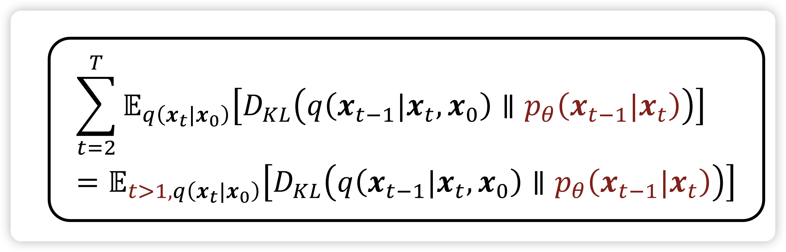
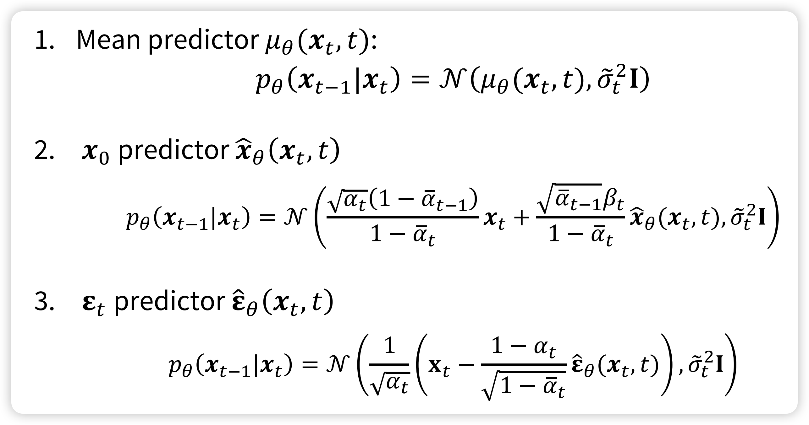
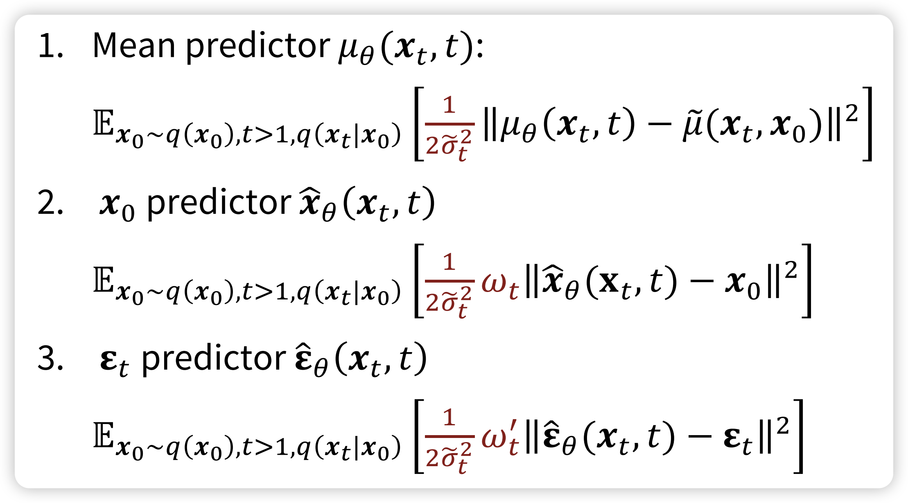
In practice, we can simply drop the weight term in training: and use noise predictor
In this blog, we will first introduce what is the diffusion models, than we will introduce how to implement the DDPM from scratch using PyTorch. After that, we will explore the flow matching and score matching model through the ODE/SDE. By the end of the blog, I believe you will gain a comprehensive understanding of the diffusion model, and SOTA generative models.
The central idea of DDPM is take each training image and to corrupt it using a multi-step noise process to transform it into a sample from a Gaussian distribution. Than, a neural network, known as denoiser \(\epsilon_{\theta}\), is trained to inver this process. Once the denoiser is trained, it can than generate new images starting with samples from Gaussian.
Diffusion Model
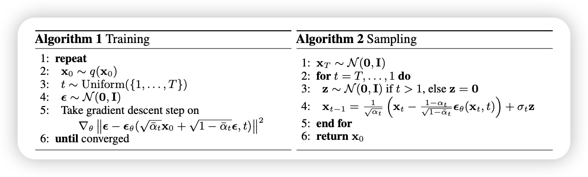
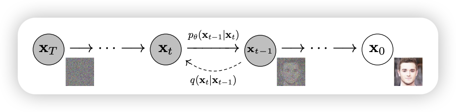
Forward Diffusion Process: \[ q(\mathrm{x}_{t} | \mathrm{x}_{t - 1}) =\mathcal{N}( \mathrm{x}_{t}; \sqrt{ 1 - \beta_{t} }\mathrm{x}_{t}, \beta_{t}\mathbf{I} ) \]
\[ \mathrm{x}_{t} = \sqrt{ 1 - \beta_{t} }\mathrm{x}_{t} + \beta_{t}\epsilon_{t}, \quad \text{where} \ \epsilon_{t} \sim \mathcal{N}(0, \mathbf{I}_{}) \]
\[ \mathrm{x}_{t} = \sqrt{ \bar{\alpha}_{t} }\mathrm{x_{0}} + \sqrt{ 1 - \bar{\alpha}_{t} }\epsilon \]
Langevin dynamics: $$ t = {t-1} + {} p({t-1}) + ,_t, _t (0, )
$$
Backward Diffusion Process: $$ \[\begin{align} & p_{\theta}(\mathbf{x}_{0:T}) = p(\mathbf{x}_T) \prod_{t=1}^T p_{\theta}(\mathbf{x}_{t-1} \mid \mathbf{x}_t) \\ & p_{\theta}(\mathbf{x}_{t-1} \mid \mathbf{x}_t) = \mathcal{N}\!\left(\mathbf{x}_{t-1}; \mu_{\theta}(\mathbf{x}_t, t), \Sigma_{\theta}(\mathbf{x}_t, t)\right) \end{align}\] $$
The above content is intractable, one thing to notice that is is tractable when we conditioned on the \(\mathrm{x}_{0}\) \[ q(\mathbf{x}_{t-1} \mid \mathbf{x}_t, \mathbf{x}_0) = \mathcal{N}\!\left(\mathbf{x}_{t-1}; \textcolor{blue}{\tilde{\mu}(\mathbf{x}_t, \mathbf{x}_0)}, \, \textcolor{red}{\tilde{\beta}_t \mathbf{I}}\right) \] where : \[ \begin{align} \tilde{\mu}_t & = \frac{\sqrt{\alpha_t}(1 - \bar{\alpha}_{t-1})}{1 - \bar{\alpha}_t}\mathbf{x}_t + \frac{\sqrt{\bar{\alpha}_{t-1}}\beta_t}{1 - \bar{\alpha}_t} \frac{1}{\sqrt{\alpha_t}} \left(\mathbf{x}_t - \sqrt{1 - \bar{\alpha}_t}\,\epsilon_t\right) \\ & = \textcolor{cyan}{\frac{1}{\sqrt{\alpha_t}} \left(\mathbf{x}_t - \frac{1 - \alpha_t}{\sqrt{1 - \bar{\alpha}_t}} \,\epsilon_t\right)} \end{align} \]
So, the loss function become: $$
\[\begin{align} \mathcal{L}_t^{\text{simple}} & = \mathbb{E}_{t \sim [1,T], \mathbf{x}_0, \epsilon_t} \left[ \left\| \epsilon_t - \epsilon_\theta(\mathbf{x}_t, t) \right\|^2 \right] \\ & = \mathbb{E}_{t \sim [1,T], \mathbf{x}_0, \epsilon_t} \left[ \left\| \epsilon_t - \epsilon_\theta\!\left(\sqrt{\bar{\alpha}_t}\mathbf{x}_0 + \sqrt{1 - \bar{\alpha}_t}\,\epsilon_t,\, t \right) \right\|^2 \right] \end{align}\] $$
and the loss is: \[ \mathcal{L} = \mathcal{L}_{t} + C \] where \(C\) is some constant not depend on \(\theta\)
1.3 Time Embedding
def get_timestep_embedding(timesteps, embedding_dim):
"""
This matches the implementation in Denoising Diffusion Probabilistic Models:
From Fairseq.
Build sinusoidal embeddings.
This matches the implementation in tensor2tensor, but differs slightly
from the description in Section 3.5 of "Attention Is All You Need".
"""
assert len(timesteps.shape) == 1
half_dim = embedding_dim // 2
emb = math.log(10000) / (half_dim - 1)
emb = torch.exp(torch.arange(half_dim, dtype=torch.float32) * -emb)
emb = emb.to(device=timesteps.device)
emb = timesteps.float()[:, None] * emb[None, :]
emb = torch.cat([torch.sin(emb), torch.cos(emb)], dim=1)
if embedding_dim % 2 == 1: # zero pad
emb = torch.nn.functional.pad(emb, (0, 1, 0, 0))
return emb1.4 Sampling
After training a noise denoiser, we can sample from the \(p_{\text{init}}\), and convert it to the \(p_{\text{data}}\). There are several approaches
1.5 DDPM
This are random samples.
1.6 DDIM
DDIM is determinstic
1.7 Conditioned Generation
So far in the DDPM model, the image generated is un-conditioned. How can we generated content from some condition \(y\) such as some prompts
1.7.1 Classifier Generation
1.7.2 Classifier-Free Generation
1.8 Speed Up Diffusion Models
1.8.1 Consistency Models
1.8.2 Latent Variable Space
Variance Autoencoder
1.9 Score Matching
\[ \nabla_{x_t} \log q(x_t|x_0) = \nabla_x \left( - \frac{\| x_t - \sqrt{\bar{\alpha}_t} x_0 \|^2}{2(1-\bar{\alpha}_t)} \right) = - \frac{x_t - \sqrt{\bar{\alpha}_t} x_0}{1-\bar{\alpha}_t} \]
$$ _{x_t} q(x_t|x_0) = - = -
$$
So, can be interpreted as predicting the score \(\nabla_{x_t} \log q(x_t|x_0)\) up to a scaling factor \(- \frac{1}{\sqrt{1-\bar{\alpha}_t}}\)
According to the Tweedie’s formula, we have: \[ \nabla_{x_t} \log q(x_t) = - \frac{x_t - \sqrt{\bar{\alpha}_t}\,\mathbb{E}[x_0 \mid x_t]}{1-\bar{\alpha}_t} \]
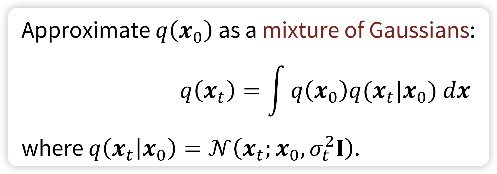 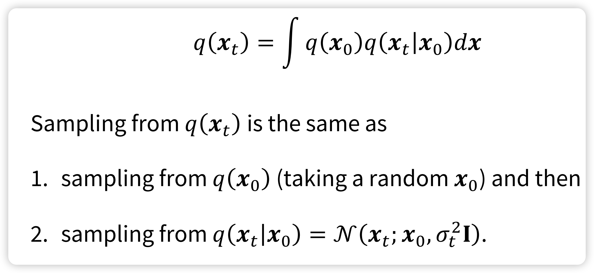
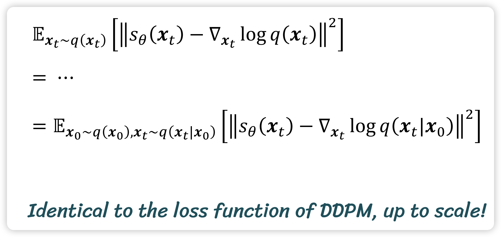
So, this is the Noise-Conditional Score-Based Models 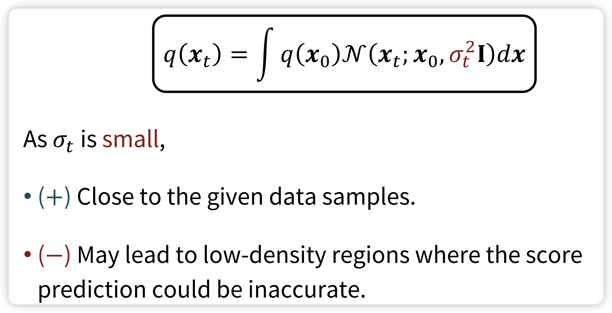
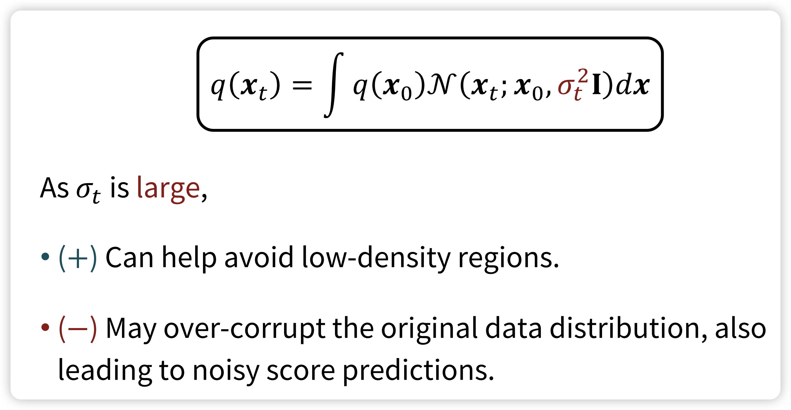
So, the solution is the Annealed Langevin Dynamics 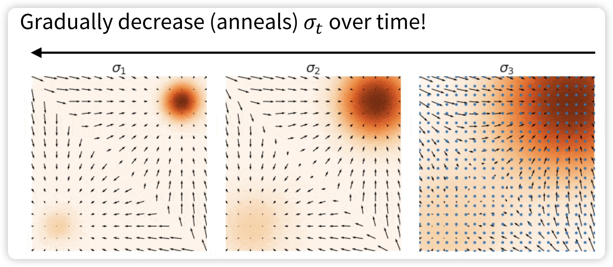 At the beginning (when \(\sigma_{t}\) is large), As time progresses (and \(\sigma_{t}\) decreases), 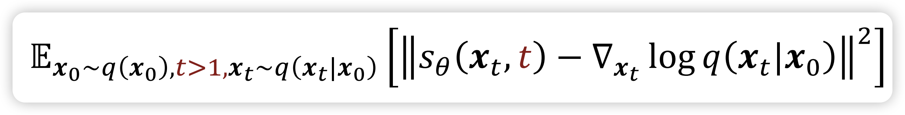
2 From ODE and SDE view point
So far, we have see the diffusion as add gaussian noise and de-noise it. Now, let’s switch gear, and under stand the Diffusion Models from the ODE view. For this Part, we will main focus on the Flow Matching, which is based on the ODE. The Score matching can understand.
2.1 ODE vs. SDE
Before talk about the ODE and SDE, let’s first understand some concepts to solid our understanding.
2.1.1 Vector Field
Vector Field is a function that assign a vector to every point in space. For example: imagine a weather map: at each location, an arrow shows the wind’s direction and strength. That arrow map is a vector field.

\[ F: \mathbb{R}^{n} \to \mathbb{R}^{n} \]
And every ODE \(u\) is defined by a vector field: \[ u: \mathbb{R}^{d} \times [0, 1] \to \mathbb{R}^{d}, \quad (x, t) \to u_{t}(x) \] that for every time \(t\) and location \(\mathrm{x}\), we get a vector \(u_{t}(\mathrm{x}) \in \mathbb{R}^{d}\) that point to some direction.
Why we need time \(t\)? Because for every location \(\mathrm{x}\), we might arrive same location at different time, due to the random start point \(\mathrm{x}_{0}\)
\[ \begin{align} \frac{d}{dt}\mathrm{x}_{t } &= u_{t}(\mathrm{x}_{t}) \\ \mathrm{x_{0}}&=x_{0} \end{align} \]
So, another question we want to ask it: when we start at \(x_{0}\), where are we at \(t\). This can be solved by flow, which is a solution to the ODE:
$$
\[\begin{align} \psi : \mathbb{R}^d \times [0,1] \mapsto \mathbb{R}^d &, \quad (x_0, t) \mapsto \psi_t(x_0) \\ \frac{d}{dt} \psi_t(x_0) & = u_t(\psi_t(x_0)) \\ \psi_0(x_0)& = x_0\\ \end{align}\] $$
\[ \mathrm{x}_{1} \sim p_{\text{data}} \] However, we can not solve the problem. But we can use the numerical analysis. One of the simplest and intuitive methods is Euler method:
\[ \mathrm{x}_{t + h} = \mathrm{x}_{t} + h u_{t}(\mathrm{x}_{t}) \quad (t = 0, h, 2h, 3h, \dots, 1- h) \]
Stochastic Differential Equations extend the ODEs with stochastic(random) trajectories, which is also known as stochastic process. The stochastic is add through a Brownian motion. A Brownain motion \(W = (W_{t})_{0\leq t \leq 1}\) is a stochastic process such that: \(W_{0} = 0\): - Normal Increments: \(W_{t} - W_{s} \sim \mathcal{N}(0, (t - s)\mathbf{I}_{d})\) for all \(0 \leq s \leq t\) - Independent Increments
Brownian Motion is also known as Wiener Process: \[ W_{t + h} = W_{t} + \sqrt{ h }\epsilon_{t}, \quad \text{where} \ \epsilon_{t} \sim \mathcal{N}(0, \mathbf{I}_{d}) \]
Ornstein-Unlenbeck(OU) process
Euler-Maruyama Method is a numerical method.
2.2 Mean Flow
Mean Flows for One-step Generative Modeling
MMDiT
3 Model Architecture
3.1 U-Net
U-Net: Convolutional Networks for Biomedical Image Segmentation
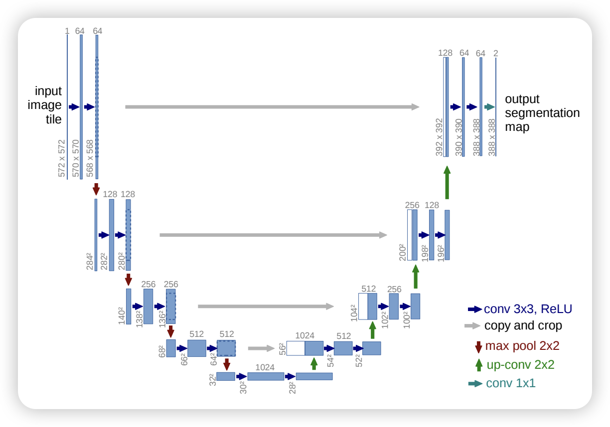
3.2 Control Net
Adding Conditional Control to Text-to-Image Diffusion Models
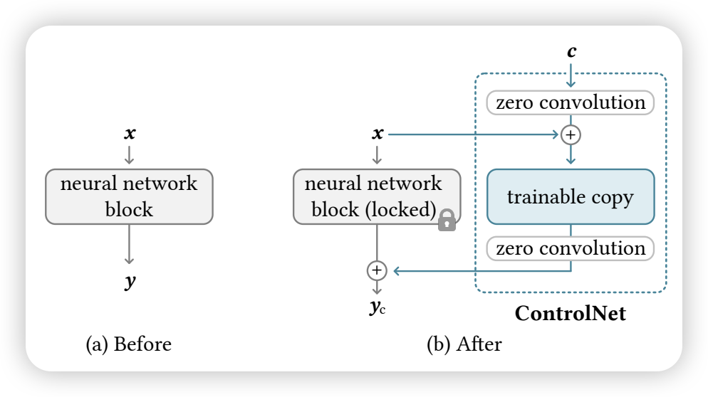
3.3 Diffusion Transformer (DiT)
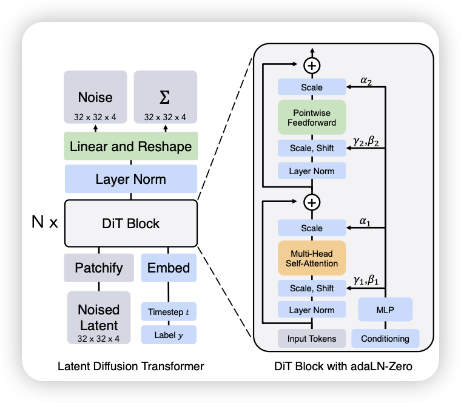
4 Case Study
4.1 Imagen
Photorealistic Text-to-Image Diffusion Models with Deep Language Understanding
5 DALL·E
5.1 Stable Diffusion
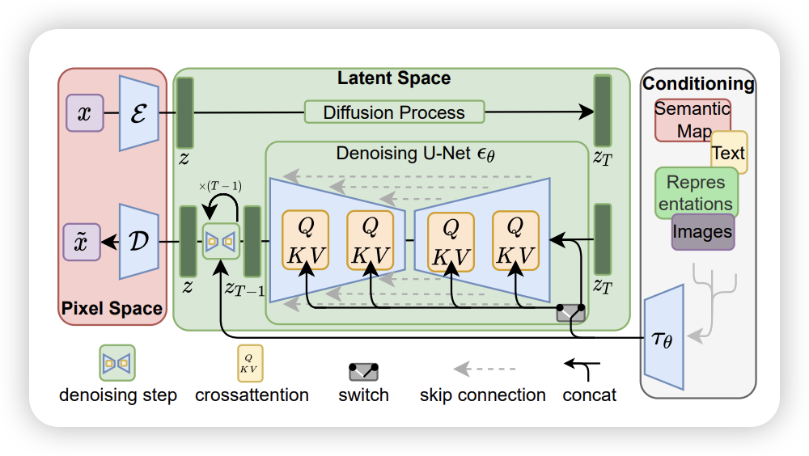
5.2 Meta Movie Gen Video
Movie Gen: A Cast of Media Foundation Models
Rectified Flow: Flow Straight and Fast: Learning to Generate and Transfer Data with Rectified Flow https://arxiv.org/pdf/2209.03003
Mean Flow Mean Flows for One-step Generative Modeling https://arxiv.org/pdf/2505.13447
6 Learning Resource
There are many good learning resource available online, thanks those who are opening those content:
Lectures: - MIT 6.S183: A Practical Introduction to Diffusion Models: - MIT 6.S184: Generative AI with Stochastic Differential Equations: focusing on diffusion models through the lens of SDEs. The ODE/SDE is based on this lecture
- KAIST: CS492(D): Diffusion Models and Their Applications: More comprehensive introduction to the diffusion models
- Stanford CS236 Deep Generative Models: Introduce different generative models from VAE to GAN and DDPM
Blogs: - Generative Modeling by Estimating Gradients of the Data Distribution By Yang Song - What are Diffusion Models? By Lilian Wang
7 KAIST CS492 Diffusion Models and Their Applications
https://mhsung.github.io/kaist-cs492d-fall-2024/
Map from \(z \sim \mathcal{N}(0, \mathbf{I}_{d})\) to \(x \sim P_{data}\) - VAE: represent the mapping from the latent distribution \(p(z)\) to the data distribution \(p(x)\) as conditional distribution \(p(x | z)\) \[ p(x | z) = \mathcal{N}(x; D_{\theta}(z), \sigma^{2}\mathbf{I}_{d}) \]
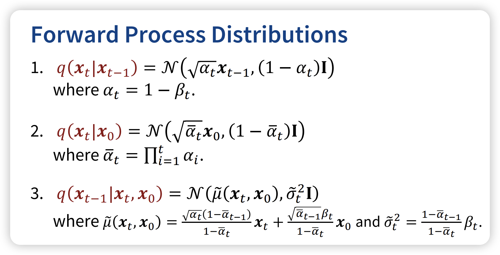
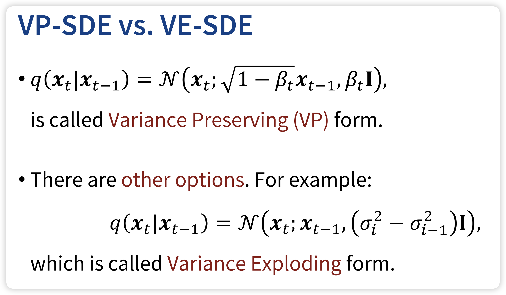